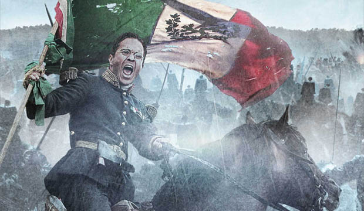

La Batalla de Atlixco tuvo lugar el 4 de mayo de 1862 en las inmediaciones de la Hacienda de las Traperas en Atlixco en el estado de Puebla, México, entre elementos del ejército mexicano de la república, al mando de los generales Antonio Carvajal y Tomás O'Horan contra las tropas al servicio del Segundo Imperio Mexicano comandadas por el general José María Cobos y de Leonardo Márquez, compuesta de soldados conservadores mexicanos en apoyo de envío de refuerzos para llevar a cabo la Batalla de Puebla, durante la Segunda Intervención Francesa en México.
Esta batalla culminó con una victoria republicana y debido a esto el grupo conservador de Márquez no pudo lograr su objetivo de auxiliar a las tropas francesas del Conde de Lorencez en la batalla de Puebla.

El Cinco de Mayo, fecha de la conmemoración de la Batalla de Puebla, marca la primera vez que el ejército mexicano pudo derrotar a una potencia extranjera mejor preparada, en este caso los franceses. La batalla tuvo lugar en la actual ciudad de Puebla de Zaragoza el 5 de mayo de 1862, entre los ejércitos de México y Francia.
El país estaba en bancarrota debido a medio siglo de conflictos y guerras casi constantes. No podía hacer frente ni a las necesidades más urgentes, por lo que el 17 de julio de 1861, el presidente Benito Juárez decretó prórroga de dos años para pagar deuda externa a países europeos. En octubre de 1861, Francia, Inglaterra y España se suscribieron a la Convención de Londres y se comprometieron a enviar militares a México para reclamar sus derechos como acreedores por una deuda que ascendía alrededor de 80 millones de pesos. Aproximadamente 69 millones eran para los ingleses, 9 millones para los españoles y 2 millones para Francia. Se negaron a negociar, por la vía diplomática, los términos y condiciones en los que se pagaría la deuda posteriormente. Así que Napoleón III, gobernante de Francia, decidió invadir México para establecer una monarquía favorable a Europa, surtirse de materias primas y en un futuro extender su imperialismo a Estados Unidos. Con ese fin, debía disolver el Gobierno mexicano establecido por el Presidente Benito Juárez.
En abril de 1862 los franceses desembarcaron en el puerto de Veracruz, y emprendieron la campaña militar hacia el centro de la República. Después de varios ataques el 5 de mayo de 1862 se dio la batalla que tuvo lugar en el cerro de Loreto, en cuya cima se encontraba una capilla acondicionada como fuerte para defender la ciudad de Puebla. El héroe de la primera batalla de Puebla fue el general Ignacio Zaragoza al mando de casi 2000 soldados y 2700 campesinos usando machetes y lanzas llamadas "chinacas" de madera con punta de metal. Los franceses usaban pistolas, carabinas con punta de metal, bayonetas y cañones. El informe que el general Zaragoza rindió sobre la Batalla de Puebla al presidente Benito Juárez fue breve y significativo.


_Napoleon_III.jpg)
En octubre de 1861, Francia, Inglaterra y España suscribieron la Convención de Londres, en la cual se comprometieron a enviar contingentes militares a México ya que este tenía una gran deuda de 80 millones de pesos, aproximadamente eran 69 millones para los ingleses, 9 millones para los españoles y 2 millones para Francia.
La alianza tripartita amenazó al presidente Benito Juarez con una invasión inminente si no se saldaba por completo las deudas que México tenía con los tres países europeos.
Juarez responde con un exhorto para lograr un arreglo amistoso, y los invitó a conferenciar. Sin embargo, sabía que había una guerra inminente y trató de proteger la Ciudad de México trasladando pertrechos y ordenó la fortificación de Puebla. Creo al Ejército de Oriente y el hombre que se designó en el mando fue el general Ignacio Zaragoza.
En un principio la Alianza Tripartita aceptó el llamado al diálogo de Benito Juarez y sus representantes se reunieron con Manuel Doblado, ministro de Relaciones Exteriores del gobierno mexicano, quien consiguió que Juan Prim, representante español, y Lord John Russell por Inglaterra se retiraran. A este acuerdo se le conoce como los Tratados Preliminares de la Soledad.
El 5 de marzo, cuando aún se realizaban las negociaciones de los Tratados de la Soledad, llegó a Veracruz un contingente militar francés bajo el mando de Charles Ferdinand Latrille, conde de Lorencez. A finales de abril, Lorencez desconoció los Tratados de Soledad y se puso en marcha, junto con sus efectivos, hacia Puebla, con el fin último de conquistar la Ciudad de México.
Estudió en la ciudad de Matamoros y en Monterrey. Después, ingresó a las Guardias Nacionales iniciando una brillante carrera militar. Durante sus primeros años en el ejército, Zaragoza se declaró abiertamente a favor de los liberales defendiendo las ciudades de Saltillo y Monterrey en contra del Gral. Santa Anna. Más tarde, partidario de la Constitución de 1857, tomó parte en importantes batallas como la de Calpulalpan, que puso fin a la Guerra de Reforma (1860). En 1862, al mando del llamado Ejército de Oriente combatió al ejército francés en Acultzingo y días más tarde, rechazó al invasor a las afueras de Puebla (en la famosa Batalla del 5 de mayo) obteniendo así, un inesperado triunfo dadas las condiciones de su tropa y el escaso número de los combatientes. Este hecho significó su victoria más notable. Pocos meses después de su triunfo en la ciudad de Puebla, el 8 de septiembre, Ignacio Zaragoza muere en esa misma capital a la edad de 33 años. Por sus hazañas, el General Zaragoza fue declarado como Benemérito de la Patria.

Miguel Negrete Novoa fue un general militar nacido el 8 de mayo de 1824 en Tepeaca, Puebla; es considerado el principal héroe de la batalla del 5 de mayo de 1862 después del General Ignacio Zaragoza.
Negrete fue investido con el cargo de general en 1862 por orden de Ignacio Zaragoza, fue el único militar nacido en Tepeaca con el grado de General de División, por ese motivo, su recuerdo se mantiene vivo como en monumento en la Plaza de Armas, o la inscripción de su nombre en letras de oro en el muro de honor del Congreso del Estado.

(Galeana, México, 1826 - Ciudad de México, 1902) Militar y político mexicano. Ingresó en la Guardia Nacional, con la que participó en la guerra contra Estados Unidos (1846-1847), que provocó su anexión de Texas, hasta dicha fecha territorio mexicano.


 1
1 2
2 4
4 6
6 7
7 9
9 11
11